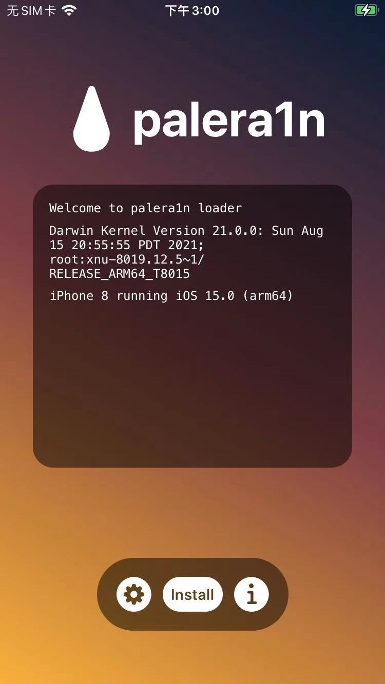

用palera1n给iOS 15.0的iPhone8越狱的详细过程
第一步：下载palera1n的二进制
此处下载：Mac的palera1n的二进制文件：
palera1n-macos-universal
https://github.com/palera1n/palera1n-c/releases/download/v2.0.0-beta.4/palera1n-macos-universal

并放到合适的目录中，比如：
/usr/local/bin/palera1n
此过程：
- 可以手动操作
- 也可以用命令去操作
sudo curl -Lo /usr/local/bin/palera1n https://github.com/palera1n/palera1n-c/releases/download/v2.0.0-beta.4/palera1n-macos-universal
sudo chmod +x /usr/local/bin/palera1n
或：
sudo mv ./palera1n-macos-universal /usr/local/bin/
mv /usr/local/bin/palera1n-macos-universal /usr/local/bin/palera1n
sudo xattr -c /usr/local/bin/palera1n
sudo chmod +x /usr/local/bin/palera1n
放好后，确保命令行可以找到：
> which palera1n
/usr/local/bin/palera1n
另外顺带去看看版本：
crifan@licrifandeMacBook-Pro ~/dev/dev_tool/reverse_security/iOS/palera1n palera1n --version
palera1n version 2.0.0: Wed Feb 15 08:49:44 UTC 2023; runner:v2.0.0-beta.4/RELEASE
# == palera1n-c ==
#
# Made by: Nick Chan, Ploosh, Mineek, Nebula, llsc12
#
# Thanks to: dora2ios, pythonplayer, tihmstar, nikias
# (libimobiledevice), checkra1n team (Siguza, axi0mx, littlelailo
# et al.), Procursus Team (Hayden Seay, Cameron Katri, Keto et.al)
第二步：palera1n -c -f，安装创建fakefs
然后就可以开始用palera1n去越狱了：
palera1n -c -f
其中：
-c,--setup-fakefsSetup fakefs- When used with -f, --fakefs, Create the new APFS volume required for rootful. Will fail if one already exists.
- 创建fakefs
- When used with -f, --fakefs, Create the new APFS volume required for rootful. Will fail if one already exists.
-f,--fakefsBoots fakefs- Jailbreak in rootful mode.
- 越狱方式/类型/模式选择：普通越狱=rootful越狱
- Jailbreak in rootful mode.
详细log日志：
crifan@licrifandeMacBook-Pro ~/dev/dev_tool/reverse_security/iOS/palera1n palera1n -c -f
# == palera1n-c ==
#
# Made by: Nick Chan, Ploosh, Mineek, Nebula, llsc12
#
# Thanks to: dora2ios, pythonplayer, tihmstar, nikias
# (libimobiledevice), checkra1n team (Siguza, axi0mx, littlelailo
# et al.), Procursus Team (Hayden Seay, Cameron Katri, Keto et.al)
- [02/27/23 14:13:08] <Info>: Waiting for devices
- [02/27/23 14:13:08] <Info>: Telling device with udid abdc0dd961c3cb96f5c4afe109de4eb48b88433a to enter recovery mode immediately
- [02/27/23 14:13:20] <Info>: Press Enter when ready for DFU mode

此时：iPhone手机中出现：
- 数据线插入电脑
- 顶部文字：
support.apple.com/iphone/restore
- 顶部文字：
的界面：
然后去：
- Enter=回车
确认准备好，提示：get ready

再根据提示：
Get ready (0)
Hold volume down + side button (0)
Hold volume down button (3)
- 去操作iPhone进入DFU模式
- Hold volume down + side button 长按 音量键减键 + 侧边栏键=电源键
- Hold volume down button （保持不松手，继续）长按 音量键减键
即可继续，进入DFU模式，继续自动越狱过程
详细log日志：
- [02/27/23 14:37:54] <Info>: Device entered DFU mode successfully
- [02/27/23 14:37:54] <Info>: About to execute checkra1n
#
# Checkra1n 0.1337.1
#
# Proudly written in nano
# (c) 2019-2023 Kim Jong Cracks
#
#======== Made by =======
# argp, axi0mx, danyl931, jaywalker, kirb, littlelailo, nitoTV
# never_released, nullpixel, pimskeks, qwertyoruiop, sbingner, siguza
#======== Thanks to =======
# haifisch, jndok, jonseals, xerub, lilstevie, psychotea, sferrini
# Cellebrite (ih8sn0w, cjori, ronyrus et al.)
#==========================
- [02/27/23 14:37:54] <Verbose>: Starting thread for Apple TV 4K Advanced board
- [02/27/23 14:37:54] <Info>: Waiting for DFU mode devices
- [02/27/23 14:37:54] <Verbose>: DFU mode device found
- [02/27/23 14:37:54] <Info>: Checking if device is ready
- [02/27/23 14:37:54] <Verbose>: Attempting to perform checkm8 on 8015 11
- [02/27/23 14:37:54] <Info>: Setting up the exploit
- [02/27/23 14:37:54] <Verbose>: == checkm8 setup stage ==
- [02/27/23 14:37:54] <Verbose>: Entered initial checkm8 state after 1 steps
- [02/27/23 14:37:54] <Verbose>: Stalled input endpoint after 4 steps
- [02/27/23 14:37:54] <Verbose>: DFU mode device disconnected
- [02/27/23 14:37:54] <Verbose>: DFU mode device found
- [02/27/23 14:37:54] <Verbose>: == checkm8 trigger stage ==
- [02/27/23 14:37:57] <Info>: Checkmate!
- [02/27/23 14:37:57] <Verbose>: Device should now reconnect in download mode
- [02/27/23 14:37:57] <Verbose>: DFU mode device disconnected
- [02/27/23 14:38:04] <Info>: Entered download mode
- [02/27/23 14:38:04] <Verbose>: Download mode device found
- [02/27/23 14:38:04] <Info>: Booting PongoOS...
- [02/27/23 14:38:06] <Info>: Found PongoOS USB Device
- [02/27/23 14:38:06] <Info>: Booting Kernel...
crifan@licrifandeMacBook-Pro ~/dev/dev_tool/reverse_security/iOS/palera1n
然后手机上会输出很多log日志：

直到看到最后的log：rebooting in 5 seconds

iPhone会继续重启，然后进入桌面
此时iPhone桌面中，还没有安装palera1n的app。
第三步：palera1n -f，首次会安装palera1n的app
继续去：
palera1n -f
去：启动设备
继续按照提示，操作iPhone进入DFU模式
详细log日志：
crifan@licrifandeMacBook-Pro ~/dev/dev_tool/reverse_security/iOS/palera1n palera1n -f
# == palera1n-c ==
#
# Made by: Nick Chan, Ploosh, Mineek, Nebula, llsc12
#
# Thanks to: dora2ios, pythonplayer, tihmstar, nikias
# (libimobiledevice), checkra1n team (Siguza, axi0mx, littlelailo
# et al.), Procursus Team (Hayden Seay, Cameron Katri, Keto et.al)
- [02/27/23 14:48:09] <Info>: Waiting for devices
- [02/27/23 14:48:09] <Info>: Telling device with udid abdc0dd961c3cb96f5c4afe109de4eb48b88433a to enter recovery mode immediately
- [02/27/23 14:48:20] <Info>: Press Enter when ready for DFU mode
Get ready (0)
Hold volume down + side button (0)
Hold volume down button (5)
- [02/27/23 14:49:55] <Info>: Device entered DFU mode successfully
- [02/27/23 14:49:56] <Info>: About to execute checkra1n
#
# Checkra1n 0.1337.1
#
# Proudly written in nano
# (c) 2019-2023 Kim Jong Cracks
#
#======== Made by =======
# argp, axi0mx, danyl931, jaywalker, kirb, littlelailo, nitoTV
# never_released, nullpixel, pimskeks, qwertyoruiop, sbingner, siguza
#======== Thanks to =======
# haifisch, jndok, jonseals, xerub, lilstevie, psychotea, sferrini
# Cellebrite (ih8sn0w, cjori, ronyrus et al.)
#==========================
- [02/27/23 14:49:56] <Verbose>: Starting thread for Apple TV 4K Advanced board
- [02/27/23 14:49:56] <Info>: Waiting for DFU mode devices
- [02/27/23 14:49:56] <Verbose>: DFU mode device found
- [02/27/23 14:49:56] <Info>: Checking if device is ready
- [02/27/23 14:49:56] <Verbose>: Attempting to perform checkm8 on 8015 11
- [02/27/23 14:49:56] <Info>: Setting up the exploit
- [02/27/23 14:49:56] <Verbose>: == checkm8 setup stage ==
- [02/27/23 14:49:56] <Verbose>: Entered initial checkm8 state after 1 steps
- [02/27/23 14:49:56] <Verbose>: Stalled input endpoint after 6 steps
- [02/27/23 14:49:56] <Verbose>: DFU mode device disconnected
- [02/27/23 14:49:56] <Verbose>: DFU mode device found
- [02/27/23 14:49:56] <Verbose>: == checkm8 trigger stage ==
- [02/27/23 14:49:57] <Info>: Checkmate!
- [02/27/23 14:49:57] <Verbose>: Device should now reconnect in download mode
- [02/27/23 14:49:57] <Verbose>: DFU mode device disconnected
- [02/27/23 14:50:04] <Info>: Entered download mode
- [02/27/23 14:50:04] <Verbose>: Download mode device found
- [02/27/23 14:50:04] <Info>: Booting PongoOS...
- [02/27/23 14:50:06] <Info>: Found PongoOS USB Device
- [02/27/23 14:50:06] <Info>: Booting Kernel...
iPhone中启动输出日志，其中屏幕中间可见 苹果的logo图标（其中嵌入了一个checkra1n的灯塔图标？）：

期间会自动安装：palera1n的app
进入iPhone桌面后，可以看到：
palera1n的app = palera1n loader = paleran的图标

第四步：进入palera1n的app去Install安装
打开palera1n的app后，进入主页，能看到有个Install按钮

此处会显示：
- 当前iPhone信息
- iPhone 8 running i0s 15.0 (arm64)
点击Install，会继续越狱过程，输出log过程，直到最后：
Finished installing! Enjoy!
期间会下载和安装：
- bootstrap.tar
- sileo.deb
- straprepo.deb
对应地址分别是：
- 此处的普通越狱
- 如果是rootless越狱
点击：Respring=重启桌面
然后桌面上即可看到：Sileo了

至此，palera1n越狱过程就结束了。
可以愉快的用Sileo去安装各种越狱插件了。